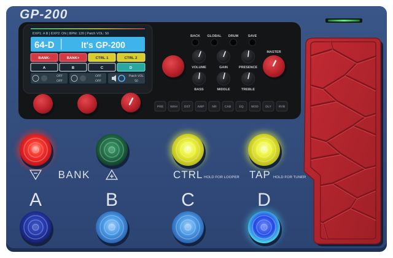

Back up and restore the patches on your Valeton GP-200 from this browser, over USB. An independent tool, not made by Valeton.
Nothing is written to the pedal until you confirm, and every patch written is read back and checked.
First: connect the pedal to this computer with a USB cable. Valeton's editor can stay open, but don't use it while this app is reading or writing the pedal.
Connected to the pedal. Go to Back up, Restore or Template.
Tested with a GP-200 on firmware 1.8.0; other models and firmware at your own risk (see Help). Works in Chrome and Edge on a computer. The browser will ask to allow MIDI access: choose Allow. Questions? See Help.

Writes one patch (any .prst file) into every slot of a range, as your own starting point for new patches: your usual wah, noise gate, effects loop and switch settings in every one. See Help for why and how.
On Back up and Template you choose a range of slots in any of three ways:
The list shows your range in blue before anything happens. Slots that will be overwritten (by a restore, or by a template once you've chosen its file) are orange. On Restore, click the patch where the restore should start; the files go into that slot and the ones after it. Each screen keeps its own choice.
To check, just open the page. If your browser can't reach the pedal, the page says so straight away.
Tested with one pedal: the developer's own GP-200 on firmware 1.8.0. Other firmware versions, and the other pedals in the GP-200 family (such as the GP-200LT and GP-200JR, which are said to use the same patch files), haven't been tested. Use it with them at your own risk, and back up before writing anything.
If you try it with another model or firmware, please say how it went, whether it worked or not: tell us it worked (a public GitHub issue; free account needed), or use Report a problem below. The app can't read the model or firmware from the pedal, so please include them.
A restore overwrites the slots shown in orange; every other slot is left alone. Back up the pedal first. Each patch is read back and checked after it's written, and the list is read again afterwards, so it always shows what's on the pedal.
Keep this tab in front while writing: browsers slow down pages in background tabs.
Your own IRs and NAM captures aren't in a backup. A patch only stores the number of the User-IR or SnapTone (NAM) slot it uses, not the file in it. On another pedal, or after that slot has been loaded with something else, the patch will sound different. The app warns about these patches when you back up or restore them.
A template is your own starting point for new patches. Build one patch with the choices you want in every patch, for example:
Write it into the slots you'll use for new sounds, and every new patch starts with those choices already made. You design the sound; the parts you rely on stay where you expect them.
Why it helps on stage: when every patch is laid out differently, it's hard to remember how each one works mid-song. When your patches share a few standards, a switch does the same job in every patch.
Different templates for different banks: a bank or two built from a clean template, a bank or two from a metal template, and so on. Each group keeps its own standards.
The Template screen writes one ordinary patch file (.prst) into every slot of a range. Any .prst works: one you exported from the pedal, or one made in GP200 Studio. Some ways to use it:
By default it fills only empty slots ("It's GP-200") and keeps every other patch, because the app can't tell an earlier template from a patch you made. Choose "Every slot in the range" to overwrite those too. Just before writing, the range is read again; if anything on the pedal changed since, nothing is written and the plan is shown again.
Problems and questions go to the project's GitHub page, as an “issue”. You need a free GitHub account, and issues are public: anyone can read them.
The log records what the app did, your browser, the pedal's MIDI ports and the names of the patches it read or wrote. It stays on your computer until you save it: the app stores nothing and sends nothing anywhere, and closing or reloading the page clears the log.
More detail: the project's README.
GP-200 Patch Manager is an independent, free, open-source tool (GPL-3.0) made by a GP-200 owner. It is not made, endorsed or supported by Valeton; "Valeton" and "GP-200" are used only to say which pedal it works with. For problems with this tool, see “Report a problem” above, not Valeton's support.